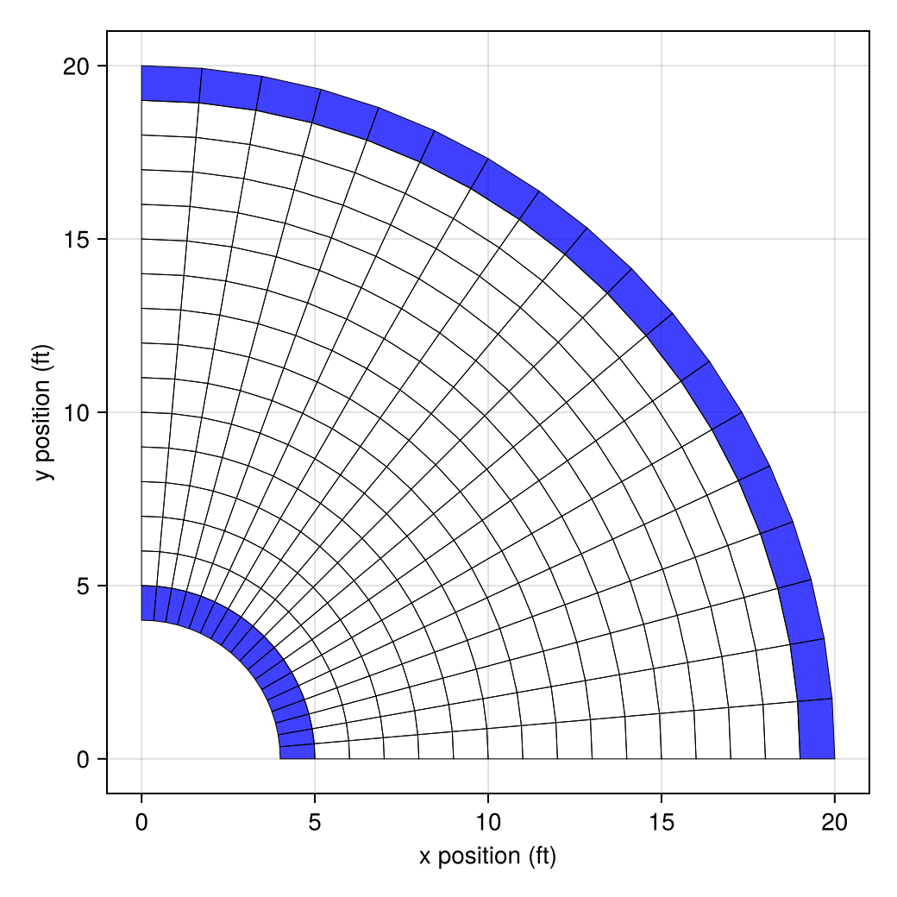
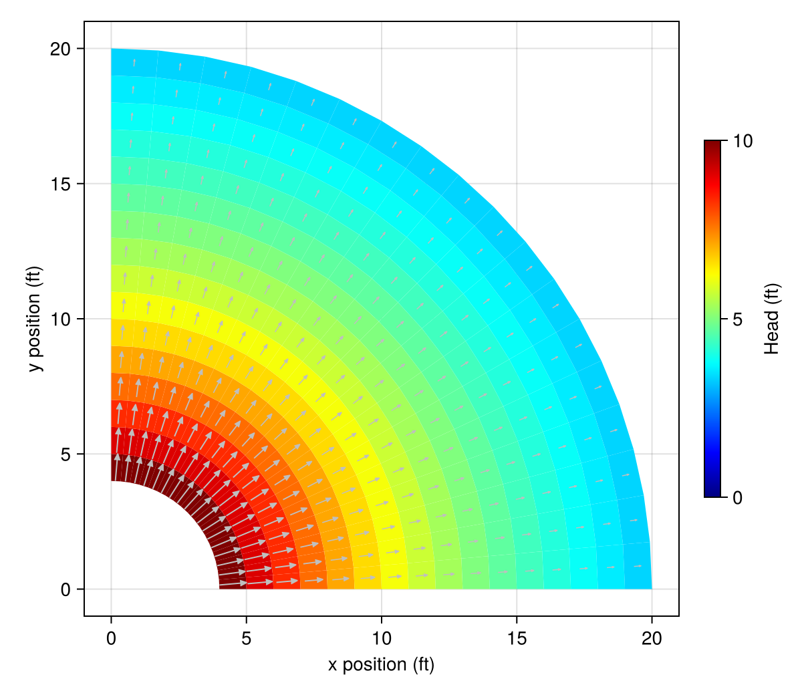
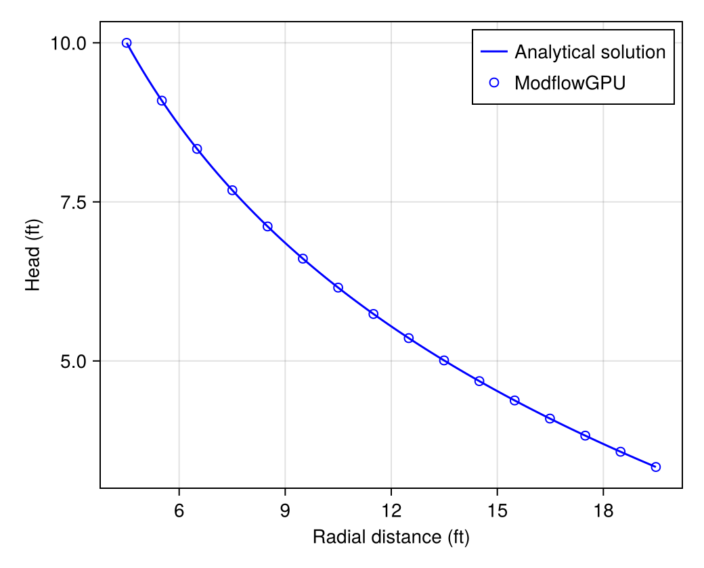
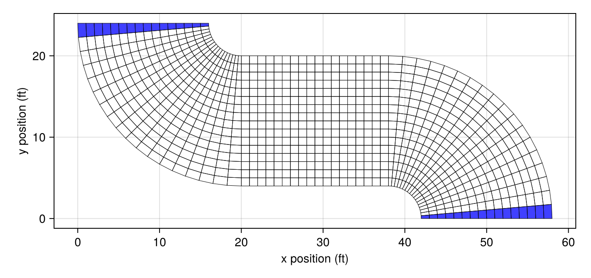
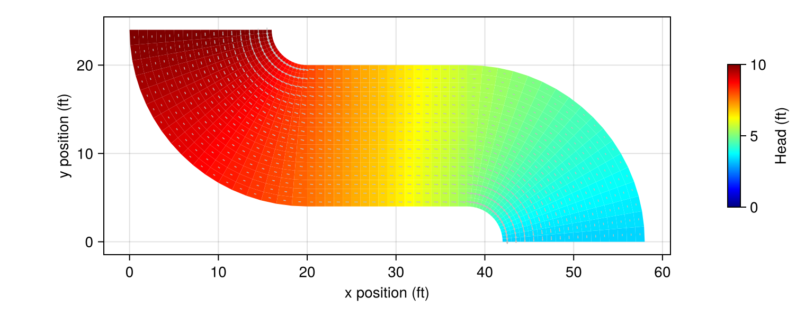
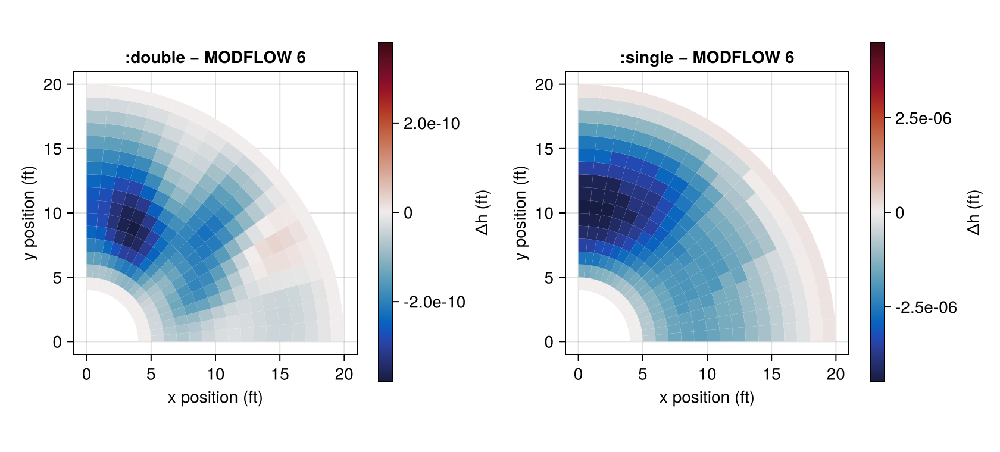
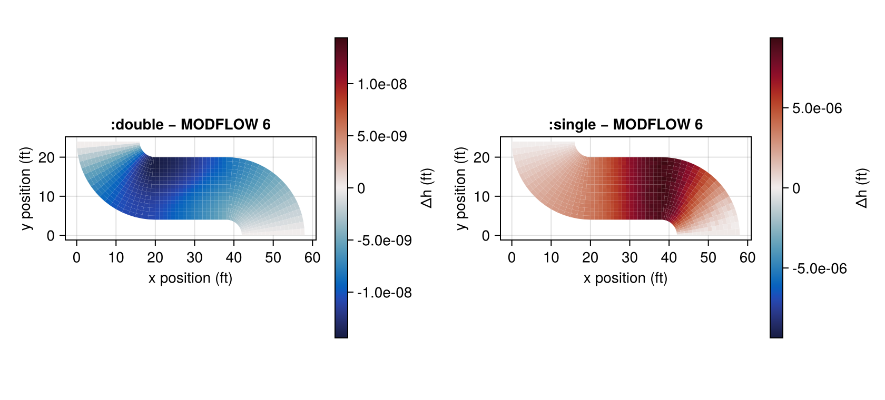

Curvilinear grids with DISV
Two models on curvilinear DISV grids from Romero and Silver (2006), who studied how the distortion of cells affects MODFLOW's finite-difference solution. Both are one layer of 10 ft, confined, steady state, with constant heads on two opposite edges. Units are feet and days.
- ex-gwf-curvilinear-90 (
ex-gwf-curve-90): a quarter of an annulus from 4 ft to 20 ft, 16 radial bands of 18 cells of 5°, with heads of 10 ft on the inner and 3.33 ft on the outer edge. The exact solution is the radial flow solution, a head that falls with the logarithm of the radius. - ex-gwf-curvilinear (
ex-gwf-curvilin): a grid merged from three parts, a curvilinear grid from 180° to 270°, a rectangular grid of 16 × 18 cells and a curvilinear grid from 90° to 0°, with heads of 10 ft and 3.33 ft on its two ends.
Input and the MODFLOW 6 runs
ExampleTools (docs/ExampleTools.jl in the repository) takes the input from the released mf6examples.zip, sets the tight closures of the parity tests in the IMS file, and runs MODFLOW 6.8.2.
using ModflowGPU, CairoMakie
mf6 = Dict(name => example_run(name) for name in ("ex-gwf-curve-90", "ex-gwf-curvilin"))
[(name, m.mode, m.mf6_time) for (name, m) in mf6]2-element Vector{Tuple{String, String, Float64}}:
("ex-gwf-curvilin", "tight", 0.037596565)
("ex-gwf-curve-90", "tight", 0.029056226)The ModflowGPU runs
In :double and in :single precision on the CPU, with the default options.
runs = Dict((name, p) => run_modflowgpu(mf6[name].dir, p) for name in keys(mf6) for p in (:double, :single))
all(r.result.converged for r in values(runs))trueA 90° curvilinear grid
The grid with the constant-head cells (blue), as in the MF6 example (whose figure also numbers the cells and vertices).
name = "ex-gwf-curve-90"
g = read_vertex_grid(mf6[name].dir)
r = runs[(name, :double)].result
fig = Figure(; size = (520, 520))
ax = Axis(fig[1, 1]; aspect = DataAspect(), xlabel = "x position (ft)", ylabel = "y position (ft)")
map_cells!(ax, g, budget_cells(g, r.budget_file, "CHD"); color = (:blue, 0.75))
map_grid!(ax, g)
save_figure(fig, "ex-gwf-curve-90-grid")
The heads, with the specific discharge (computed from ModflowGPU's FLOW-JA-FACE record as MODFLOW 6 computes it for SAVE_SPECIFIC_DISCHARGE).
function head_figure(g, r; size)
h = layer_values(g, read_head(open_head_file(r.head_file), 1), 1)
qx, qy = specific_discharge(g, vec(only(read_budget(open_budget_file(r.budget_file); text = "FLOW-JA-FACE"))), h)
fig = Figure(; size)
ax = Axis(fig[1, 1]; aspect = DataAspect(), xlabel = "x position (ft)", ylabel = "y position (ft)")
hm = map_heatmap!(ax, g, h; colormap = :jet, colorrange = (0.0, maximum(h)))
map_vectors!(ax, g, qx, qy)
Colorbar(fig[1, 2], hm; label = "Head (ft)", height = Relative(0.6))
return fig
end
save_figure(head_figure(g, r; size = (600, 520)), "ex-gwf-curve-90-head")
The heads along the middle of the grid (the cells between 40° and 45°) against the exact solution h(r) = (h₁ ln(r₂/r) + h₂ ln(r/r₁)) / ln(r₂/r₁) (Crank, 1975), with r₁, r₂ the radii of the centres of the first and last band and h₁ = 10 ft, h₂ = 3.33 ft the constant heads there, as in the MF6 example.
h = vec(read_head(open_head_file(r.head_file), 1))
θ = atand.(g.yc, g.xc)
band = sort(findall(t -> 40 < t < 45, θ); by = i -> hypot(g.xc[i], g.yc[i]))
radius = [hypot(g.xc[i], g.yc[i]) for i in band]
r1, r2, h1, h2 = first(radius), last(radius), 10.0, 10.0 / 3
radial_head(x) = (h1 * log(r2 / x) + h2 * log(x / r1)) / log(r2 / r1)
fig = Figure(; size = (520, 420))
ax = Axis(fig[1, 1]; xlabel = "Radial distance (ft)", ylabel = "Head (ft)")
lines!(ax, range(r1, r2; length = 100), radial_head; color = :blue, label = "Analytical solution")
scatter!(ax, radius, h[band]; color = :transparent, strokecolor = :blue, strokewidth = 1, label = "ModflowGPU")
axislegend(ax; position = :rt)
save_figure(fig, "ex-gwf-curve-90-obs-head")
A multipart curvilinear grid
The grid with the constant-head cells, and the heads with the specific discharge. The MF6 example also draws the three grids it merges; they are not part of the model input, so they are left out here.
name = "ex-gwf-curvilin"
g = read_vertex_grid(mf6[name].dir)
r = runs[(name, :double)].result
fig = Figure(; size = (700, 330))
ax = Axis(fig[1, 1]; aspect = DataAspect(), xlabel = "x position (ft)", ylabel = "y position (ft)")
map_cells!(ax, g, budget_cells(g, r.budget_file, "CHD"); color = (:blue, 0.75))
map_grid!(ax, g)
save_figure(fig, "ex-gwf-curvilin-grid")
save_figure(head_figure(g, r; size = (760, 300)), "ex-gwf-curvilin-head")
Comparison with MODFLOW 6
The head differences between ModflowGPU and MODFLOW 6, in both precisions.
function differences(name)
g = read_vertex_grid(mf6[name].dir)
h6 = read_head(open_head_file(only(filter(endswith(".hds"), readdir(mf6[name].dir; join = true)))), 1)
d = [":$p − MODFLOW 6" => read_head(open_head_file(runs[(name, p)].result.head_file), 1) .- h6 for p in (:double, :single)]
return difference_map(g, d; unit = "ft", xlabel = "x position (ft)", ylabel = "y position (ft)")
end
save_figure(differences("ex-gwf-curve-90"), "ex-gwf-curve-90-difference")
save_figure(differences("ex-gwf-curvilin"), "ex-gwf-curvilin-difference")
The largest head and budget differences, next to the values of the parity table, and the wall times (CPU: this build, including compilation for the first run of the session; GPU: the parity table, AMD Radeon RX 7800 XT). First ex-gwf-curve-90, then ex-gwf-curvilin:
stats(name) = Dict(p => (; cmp = compare_with_mf6(mf6[name].dir, runs[(name, p)]), runs[(name, p)].time) for p in (:double, :single))
comparison_table("ex-gwf-curve-90", stats("ex-gwf-curve-90"); unit = "ft")| Preset | max |Δh| (ft), this build | max |Δh| (ft), parity table | Budget, this build | Budget, parity table | CPU time, this build (s) | GPU time, parity table (s) |
|---|---|---|---|---|---|---|
:double | 3.8e-10 | 3.8e-10 | 1.3e-11 | 1.3e-11 | 0.07 | 0.52 |
:single | 4.5e-06 | 4.5e-06 | 2.0e-07 | 2.0e-07 | 0.36 | 2.55 |
Budget: the largest difference of a budget-file flow or a listing-table rate, relative to the total inflow of its time step.
comparison_table("ex-gwf-curvilin", stats("ex-gwf-curvilin"); unit = "ft")| Preset | max |Δh| (ft), this build | max |Δh| (ft), parity table | Budget, this build | Budget, parity table | CPU time, this build (s) | GPU time, parity table (s) |
|---|---|---|---|---|---|---|
:double | 1.4e-08 | 1.4e-08 | 1.5e-09 | 1.5e-09 | 5.97 | 0.01 |
:single | 9.4e-06 | 9.4e-06 | 1.3e-06 | 1.3e-06 | 7.15 | 0.02 |
Budget: the largest difference of a budget-file flow or a listing-table rate, relative to the total inflow of its time step.